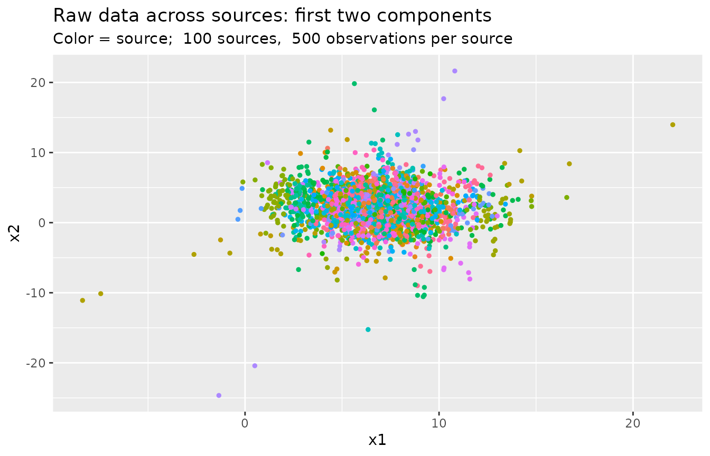

prior_elicitation.Rmdset.seed(1337) library(bayessource) requireNamespace('mvtnorm') #> Loading required namespace: mvtnorm
Let’s generate a test dataset with known parameters.
We will use some supporting functions:
# Generate n random integers in {min, ..., max} randi <- function(n, min, max) { round(runif(n, min, max)) } #' Generate random invertible symmetric pxp matrix #' #' @param p matrix size #' @param alpha regularization > 0 randinvmat <- function(p, M = 5, alpha = NULL) { stopifnot(p > 0) stopifnot(M > 0) if (is.null(alpha)) { alpha <- p + 1 } else { stopifnot(alpha > 0) } M * stats::rWishart(1, p + alpha, diag(p))[,,1]/(p + alpha) } # Compute inverse of X if X is sympd solve_sympd <- function(X) { chol2inv(chol(X)) }
We will generate the data according to the model: for sources \(i = 1, \ldots, m\),
\[X_{ij} \; | \; \theta_i, \; W_i \sim \quad N_p(\theta_i, W_i) \quad \forall j = 1, \ldots, n \] \[\theta_i \; | \; \mu, B \sim \quad N_p(\mu, B)\] \[W_i \; | \; U, n_w \sim \quad IW(U, n_w)\]
p <- 4 # number of variables m <- 100 # number of sources n <- 500 # number of items per source
Upper hierarchical level: generate \(\mu\), \(n_w\), \(B\), \(U\)
list_exact <- list() list_exact$B.exact <- randinvmat(p, alpha=2) # Between Covariance matrix list_exact$U.exact <- randinvmat(p, alpha=2) # Inverted Wishart scale matrix list_exact$mu.exact <- randi(p, 0, 10) # mean of means list_exact$nw.exact <- 2*(p + 1) + 1 # dof for Inverted Wishart, as small as possible
Middle hierarchical level: for every source generate
theta.sources.exact <- list() for (i in seq(m)) { theta.sources.exact[[i]] <- mvtnorm::rmvnorm(1, list_exact$mu.exact, list_exact$B.exact) } W.sources.exact <- list() for (i in seq(m)) { # Equivalents: # W.sources.exact[[i]] <- solve(rWishart(1, nw.exact, solve(U.exact))[,,1]) W.sources.exact[[i]] <- bayessource::riwish_Press(list_exact$nw.exact, list_exact$U.exact) }
Lower hierarchical level: raw data from every source
df <- list() for (i in seq(m)) { # The data df[[i]] <- mvtnorm::rmvnorm(n, theta.sources.exact[[i]], W.sources.exact[[i]]) # The source (last column) df[[i]] <- cbind(df[[i]], i) } df <- data.frame(do.call(rbind, df)) colnames(df) <- paste(c(paste0('v', seq(1:p)), 'source')) head(df) #> v1 v2 v3 v4 source #> 1 7.783807 2.3526976 1.1456413 3.235036 1 #> 2 7.478913 4.1146210 0.8399942 1.533766 1 #> 3 7.490046 3.7630065 0.6714497 1.734876 1 #> 4 7.228848 0.7886417 -0.5594819 3.323668 1 #> 5 7.354987 1.7059334 1.9262933 2.380303 1 #> 6 6.920879 2.4161567 3.0941613 1.858068 1
The item column is the last one (p + 1).
First two components across sources:
library(ggplot2) df_sub <- df[sample(1:nrow(df), nrow(df) * 0.05, replace = FALSE), ] ggplot(df_sub, aes(x = v1, y = v2, col = factor(source))) + geom_point(size = 1, show.legend = FALSE) + labs(x = 'x1', y = 'x2', title = 'Raw data across sources: first two components', subtitle = paste('Color = source; ', m, 'sources, ', n, 'observations per source'))

The package supplies the function make_priors_and_init.
Suppose that df represents a background dataset.
We can use it to elicit the model hyperparameters:
col.variables <- 1:p col.item <- p + 1 use.priors <- 'ML' use.init <- 'random' priors <- make_priors_and_init(df, col.variables, col.item, use.priors, use.init) names(priors) #> [1] "mu" "U" "B.inv" "nw" "W.inv.1" "W.inv.2"
\[\theta_i \; | \; \mu, B \sim \quad N_p(\mu, B)\]
bmatrix(as.matrix(priors$mu), pre = '\\mu =', digits = bmatrix.digits)
\[ \mu = \begin{bmatrix} 6.8288 \\ 2.0473 \\ 0.8846 \\ 2.9926 \\ \end{bmatrix} \]
Exact:
bmatrix(as.matrix(list_exact$mu.exact), pre = '\\mu =', digits = bmatrix.digits)
\[ \mu = \begin{bmatrix} 7.0000 \\ 2.0000 \\ 1.0000 \\ 3.0000 \\ \end{bmatrix} \]
bmatrix(priors$B.inv, pre = 'B^{-1} =', digits = bmatrix.digits)
\[ B^{-1} = \begin{bmatrix} 1.1238 & 0.9870 & -0.7478 & -0.0710 \\ 0.9870 & 2.1015 & -0.8342 & 0.1850 \\ -0.7478 & -0.8342 & 0.8177 & -0.1066 \\ -0.0710 & 0.1850 & -0.1066 & 0.1953 \\ \end{bmatrix} \]
Exact:
bmatrix(solve_sympd(list_exact$B.exact), pre = 'B^{-1} =', digits = bmatrix.digits)
\[ B^{-1} = \begin{bmatrix} 0.9970 & 0.9335 & -0.7219 & 0.0117 \\ 0.9335 & 2.0978 & -0.7957 & 0.1698 \\ -0.7219 & -0.7957 & 0.7742 & -0.1125 \\ 0.0117 & 0.1698 & -0.1125 & 0.1440 \\ \end{bmatrix} \]
\[ W_i \sim IW(n_w, U) \]
\[n_w = 11\]
bmatrix(priors$U, pre = 'U =', digits = bmatrix.digits)
\[ U = \begin{bmatrix} 1.6633 & 1.1123 & -1.3456 & 1.6272 \\ 1.1123 & 8.8548 & -1.6904 & -0.6213 \\ -1.3456 & -1.6904 & 13.1649 & 2.2322 \\ 1.6272 & -0.6213 & 2.2322 & 5.0199 \\ \end{bmatrix} \]
Exact:
bmatrix(list_exact$U.exact, pre = 'U =', digits = bmatrix.digits)
\[ U = \begin{bmatrix} 0.9172 & 1.1136 & -1.1124 & 0.5796 \\ 1.1136 & 11.4074 & -3.4977 & -1.5801 \\ -1.1124 & -3.4977 & 12.3324 & 2.6193 \\ 0.5796 & -1.5801 & 2.6193 & 3.9750 \\ \end{bmatrix} \]
Within covariance matrices and their inverses: we initialize the chain with
bmatrix(priors$W.inv.1, pre = 'W^{-1}_1 =', digits = bmatrix.digits)
\[ W^{-1}_1 = \begin{bmatrix} 8.2080 & -1.2025 & 0.2300 & -5.1136 \\ -1.2025 & 0.6395 & 0.1093 & 0.6541 \\ 0.2300 & 0.1093 & 0.7650 & -1.1145 \\ -5.1136 & 0.6541 & -1.1145 & 4.6794 \\ \end{bmatrix} \]
bmatrix(priors$W.inv.2, pre = 'W^{-1}_2 =', digits = bmatrix.digits)
\[ W^{-1}_2 = \begin{bmatrix} 8.2080 & -1.2025 & 0.2300 & -5.1136 \\ -1.2025 & 0.6395 & 0.1093 & 0.6541 \\ 0.2300 & 0.1093 & 0.7650 & -1.1145 \\ -5.1136 & 0.6541 & -1.1145 & 4.6794 \\ \end{bmatrix} \]
The list returned by make_priors_and_init can be used in calls to marginalLikelihood and samesource_C:
priors <- make_priors_and_init(df, col.variables, col.item, use.priors, use.init) mtx_data <- as.matrix(df[, col.variables]) ml <- marginalLikelihood(X = mtx_data, n.iter = 1000, burn.in = 100, B.inv = priors$B.inv, W.inv = priors$W.inv.1, U = priors$U, nw = priors$nw, mu = priors$mu)